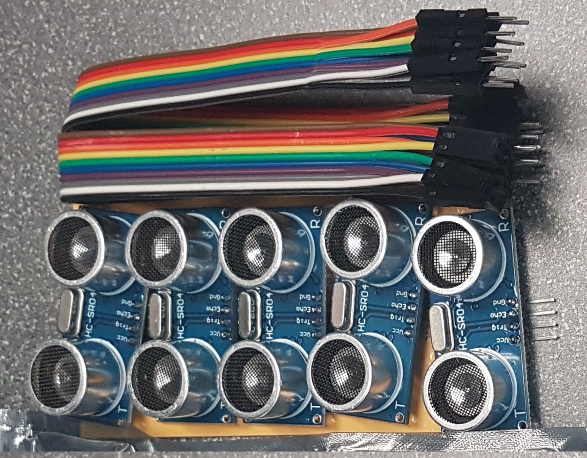
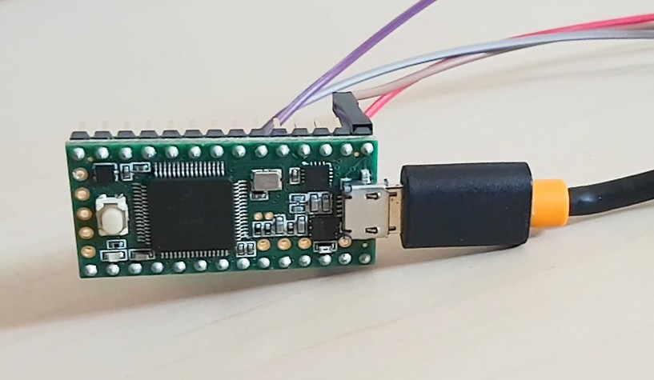

Ultrasonic Light Piano
A device that creates music using movements and luminosity
Ultrasonic Light Piano
Hacking and Tinkering
The goal of this project is to make and use a DIY tool to “see” or “show” the environment in a different way. For our initial research question, our team was interested in the concept of turning light into a playable instrument. What do iridescent lights sound like versus sunlight? The question that led us forward in our design was “How can we use sounds to help people explore the lights around them?”, “How does lighting change the mood?”
Our inspiration
With these questions in mind, we created a working system that is an extensive modification of the Instructable project — Ultrasonic Piano Pi Piano with Gesture Controls.
We decided to add a light sensor onto the ultrasonic pi piano in order to sense the surrounding illuminations in the environment. The luminasity data is used to change the instrument of the piano: lower luminasity corresponds to a more somber instrument, such as cello; higher luminasity corresponds to a more cheerful instrument, such as violine and Xylophone.
Raspberry Pi 2
8 x HC-SR04 Ultrasonic Distance Sensors

Adafruit Lux TSL2561 Light Sensor
- Physical Prototyping
- Rust Programming Language
- Arduino / C
Final Prototype
And challenges we faced during the project
The base code of the Instructable project we were able to find is written in Rust, a programming language that none of us knew how to use. Its syntax is similar to C++, but it is also a language that we were not familiar with. This add difficulties to the "hacking" part of our project, but we was managed to figure out the code in a short period of time and add more functionailities to the piano.
Raspberry Pi has a serious bug in its I2C implementation which can (a) prevent I2C communication with some devices and (b) lead to data corruption, according to Advamation.
Some sensors do not use clock-stretching and thus can be used on Raspberry Pi. There are a few Rust libraries that implemented I2C to use with some of the popular sensors such as accelerometer. However, STL2561 light sensor is not one of them. With the I2C bug and unfamiliarity with Rust, we have to find other ways to implement the light sensor.
Step 1: Test light sensor using Arduino (here we are using Teensy 3.1 board) 
Step 2: Output light sensor data to serial port
Step 3: Read serial port in Rust on Raspberry Pi
Finally step: Set luminosity range and change instrument during runtime

Physical Prototyping
Solve the "cross-interference" problem by tinkering the design
We followed the intial design of the box from the Instrutable tutorial. After playing around with it, we realize holding one's hand on top of a sensor can trigger the nearby sensors to produce sound as well.
"Cross-Interference" Problem
Each ultrasonic sensor project upwards in a 30 degree cone. After some calculation we found that with the current box design of the prototype, interference between sensors can occur when user's hand is within 40 cm range.
Redesign the case
Through some trigonometry, a laser-cutter, and a little trial-and-error, we prototyped a new design: an arch.
Laser Cut the Final Design
We found that pressed cardboard performs the best when bended and can maintain its structure at the same time.
Finish the Design
Finishing up by sanding and spray painting the case
Final Prototype
Fit everything into the case, pull power cord and audio output cord through the hole at the back